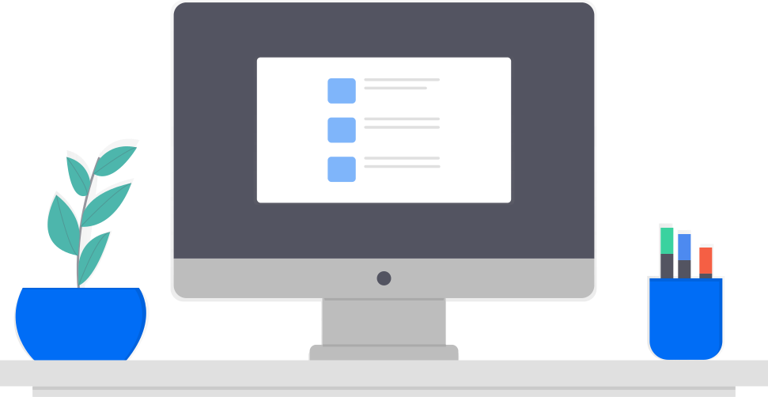

Jitsi Meet Desktop app
You may need to click
Open Jitsi Meet
in the dialog shown by the browser.
Don’t have Jitsi Meet installed?
Download Now
Use the web app instead

Life is more fun when you use the Jitsi Meet Electron app
Download the app
Use the web app instead